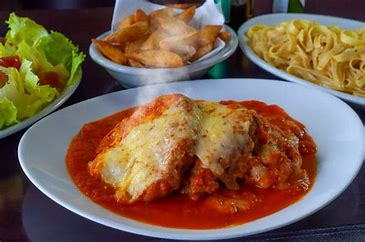

Parmegiana

Descrição
Bife a Parmegiana com molho de tomate Delicioso, receita disponibilizada pelo ainda mais gostoso Rodrigo Hilbert.
Ingredientes
Para o Bife
- 1 kg de contrafilé limpo e cortado em bifes finos
- 300g de farinha de trigo
- 300g de farinha de rosca
- 100g de queijo parmesão
- 1 colher de chá de alho em pó
- 1 colher de chá de cebola em pó
- 2 colheres de salsinha picada
- 4 ovos
- Óleo para fritar por imersão
- Sal e pimenta-do-reino a gosto
Para o Molho
- 1 cebola picada
- 3 dentes de alho
- 1/2 xícaras de chá de azeite
- 1 lata de tomate pelado
- 1 colher de chá de mostarda
- Sal a gosto
Para a montagem
- Queijo Muçarela
- Orégano a gosto
Modo de Preparo
Para o bife
- Tempere os bifes com sal e pimenta-do-reino a gosto e reserve. Bata os ovos inteiros em um refratário e tempere com sal a gosto. Em outro recipiente, coloque a farinha de trigo e tempere com a cebola e alho em pó e sal.
- Por último, em outro recipiente, coloque a farinha de rosca, o queijo e a salsinha e misture bem. Em uma panela, adicione o óleo e leve ao fogo para aquecer. Passe os bifes primeiro na farinha de trigo, em seguida no ovo, e por último na farinha de rosca. Frite os bifes e ponha para escorrer em papel-toalha e disponha-os em uma travessa refratária.
Para o molho
- Em uma panela, adicione o azeite e leve ao fogo para aquecer. Refogue o alho e a cebola, e deixe dourar. Junte o tomate pelado, a mostarda e tempere com sal. Abaixe o fogo e deixe o molho apurar entre 10 e 15 minutos.
Para a montagem
- Despeje o molho pronto sobre os bifes e distribua o queijo muçarela sobre os bifes.
Salpique delicadamente um pouco de orégano em cima do queijo e leve ao forno até o queijo derreter. Sirva em seguida.
Com isso, você terá uma deliciosa comida receitada por um delicioso HOMEM!!!!